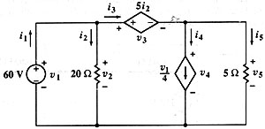

Problem #1
In the following circuit, find all voltages , all currents and the power in all elements. (Hayt-Kemmerly)

This problem offers the best oportunity to enjoy Symbulator capabilities, since Hayt and Kemmerly ask for exactly all the answers Symbulator provides! I used the following circuit description:
"e60,x,0,60; r20,x,0,20; ed,x,y,5*ir20; jd,y,0,0.25*v1; r5,y,0,5" ->cir
Simulate the circuit:
sq\dc(cir
)
Done
Retrieve the answer. Since the book asks for the generated power and Symbulator returns the consumed power, you have to change the sign of the power when you ask for it:
60
vx -> v2
60
15
vy -> v4
45
vy -> v5
45
-ie60 -> i1
27
ir20 -> i2
3
ied -> i3
24
ijd -> i4
15
ir5 -> i5
9
ied -> i3
-.00563
pe60
360
pr20
180
ped
360
pjd
675
pr5
405